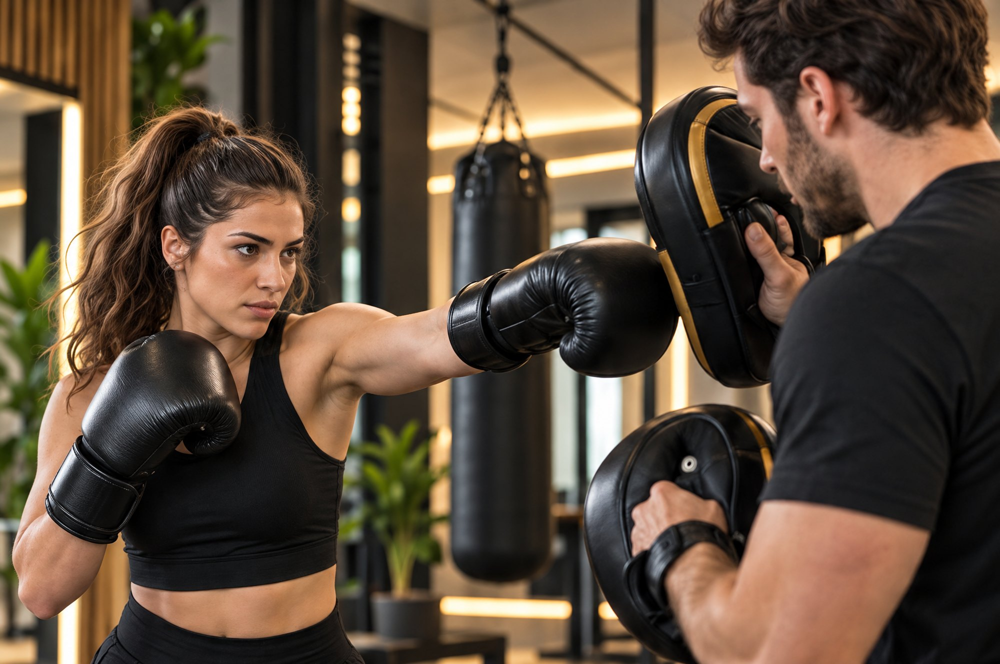
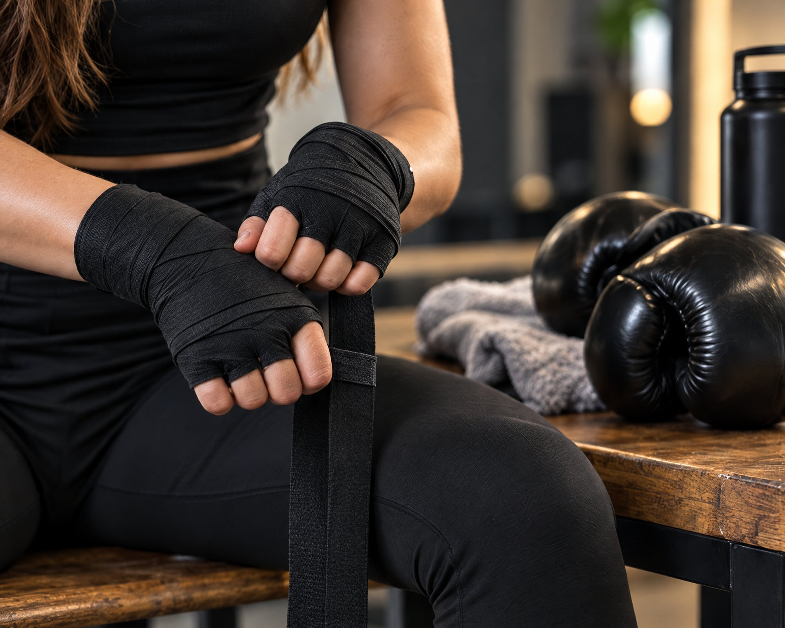
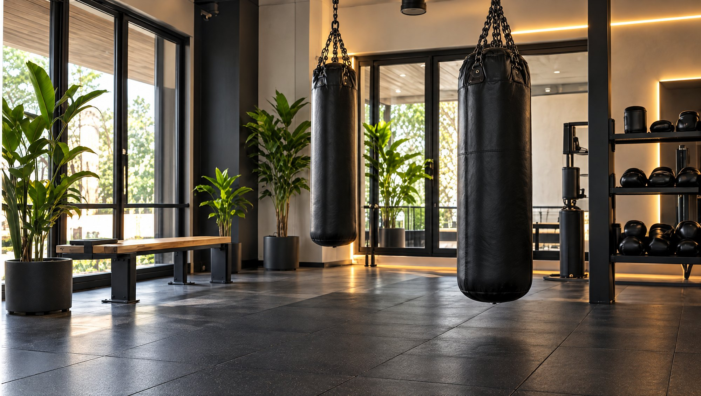

Boksa başlamak için deneyim gerekir mi?
Hayır. İlk derslerde temel duruş, ayak hareketleri ve yumruk teknikleriyle başlarsın; tempo deneyimine göre ayarlanır.
Boks antrenmanını keşfet.
Hedeflerini konuşalım, başlangıç
seviyeni birlikte belirleyelim.

Temel duruş, ayak hareketleri ve
yumruk tekniklerine odaklan.
Tüm dersler uzman eğitmen
eşliğinde, güvenli ve kontrollü
şekilde ilerler.
Kendi ritminde, hedeflerine uygun
bir antrenman deneyimi sunulur.
Temel duruş, ayak hareketleri ve yumruk teknikleriyle
tanış. Antrenman akışını deneyimine ve hedeflerine
göre birlikte planlayalım.
Özetle boks antrenmanı; yumruk tekniklerini, ayak hareketlerini ve kondisyon çalışmasını bir araya getiren bir antrenman biçimi. Aşağıdaki başlıklarda bir dersin akışından ilk adımına kadar merak ettiklerini derledik.
Boks antrenmanı, yumruk tekniklerini ayak hareketleriyle, kardiyo ve core çalışmasıyla birleştirir. Bu yüzden yalnızca kolların değil; omuzların, gövden ve bacakların da aynı anda çalışır. Fitness odaklı boks derslerinde amaç dövüşmek değil, tekniği öğrenmek ve kondisyonunu geliştirmek. Böylece güvenli bir tempoda ilerlerken hem bedenini hem odağını çalıştırırsın. Kısacası boks, ritim ve dikkat isteyen kapsamlı bir antrenman.
Sonraki konuBir ders nasıl geçer?Ders, eklemlerini ve kaslarını hazırlayan bir ısınmayla başlar. Sonra temel duruşu, gardı ve ayak hareketlerini çalışırsın. Ardından jab, kroşe ve aperkat gibi yumrukları önce tek tek, sonra kısa kombinasyonlar hâlinde öğrenirsin. Eğitmenin tekniğini yakından izler; hızı ve tempoyu kondisyonuna uygun tutar. Son dakikalardaki soğuma ve esnemeyle nabzın yavaş yavaş normale döner.
Sonraki konuKimler için uygun?Boksa başlamak için deneyim gerekmez; ilk derslerde temelleri adım adım öğrenirsin. Formda kalmak, kondisyonunu artırmak ya da günün stresini atmak isteyenler boksu sıklıkla tercih eder. Benzer şekilde koordinasyonunu ve reflekslerini geliştirmek isteyenler için de iyi bir seçenek. Bununla birlikte eklem, bel ya da kalp rahatsızlığın varsa bunu ilk görüşmede paylaşman önemli. Böylece eğitmenin tempoyu ve hareketleri sana göre ayarlar.
Sonraki konuSana neler katar?Düzenli boks antrenmanı kas gücünü, dayanıklılığını ve koordinasyonunu birlikte çalıştırır. Kombinasyonlar dikkatini canlı tutar; çünkü her yumrukta duruşuna, nefesine ve ritmine odaklanırsın. Üstelik gard ve blok gibi savunma temelleri, kendini daha güvende hissetmene yardımcı olur. Ders boyunca dikkatini tek bir hedefe verdiğin için günün temposundan da uzaklaşırsın. Sonuç olarak boks, bedenini ve zihnini birlikte çalıştıran bir rutine dönüşür.
Sonraki konuDengeli bir haftaBoks tek başına güçlü bir antrenman; yine de haftanı farklı derslerle dengelemek iyi gelir. Örneğin boksun yüksek temposunu Reformer Pilates ile dengeleyerek esneklik ve duruş tarafını destekleyebilirsin. Kısa sürede yoğun çalışmak istediğin günlerde EMS antrenmanı, kişisel hedeflerin için ise personal trainer derslerini düşünebilirsin. Dolayısıyla hangi kombinasyonun sana uyduğunu ilk görüşmede birlikte planlıyoruz.
Sonraki konuKalamış’taki stüdyomuzBoks derslerimiz Kalamış’ta, Kalissa Fit’in birinci kattaki butik stüdyosunda ilerliyor. İstersen ilk dersten önce, binanın zemin katındaki Kalissa Beauty & Wellness bünyesinde çalışan beslenme danışmanımızla tanışabilirsin. Bu görüşmede hedeflerini ve günlük alışkanlıklarını konuşuyoruz; böylece boks programın bütün bir yaşam düzenine oturur. Deneme dersi için bize yaz; Kadıköy’den ya da çevreden gelmen için uygun saati birlikte bulalım.
Başlamaya hazırsanDeneme dersini planla
Dersin akışını ve başlangıç seviyeni
birlikte belirleyelim.

Hayır. İlk derslerde temel duruş, ayak hareketleri ve yumruk teknikleriyle başlarsın; tempo deneyimine göre ayarlanır.
Rahat hareket edebileceğin spor kıyafeti, spor ayakkabısı ve su yeterli. Eldiven ve bandaj konusunu randevu sırasında ekibe sorabilirsin.
İlk görüşmede hedeflerini ve spor geçmişini konuşuruz. Eğitmenin, ilk derste tekniğini ve kondisyonunu gözlemleyerek antrenman akışını sana göre planlar.
WhatsApp’tan yaz, birlikte yanıtlayalım.
Sorularını paylaş, deneme dersini planlayalım.